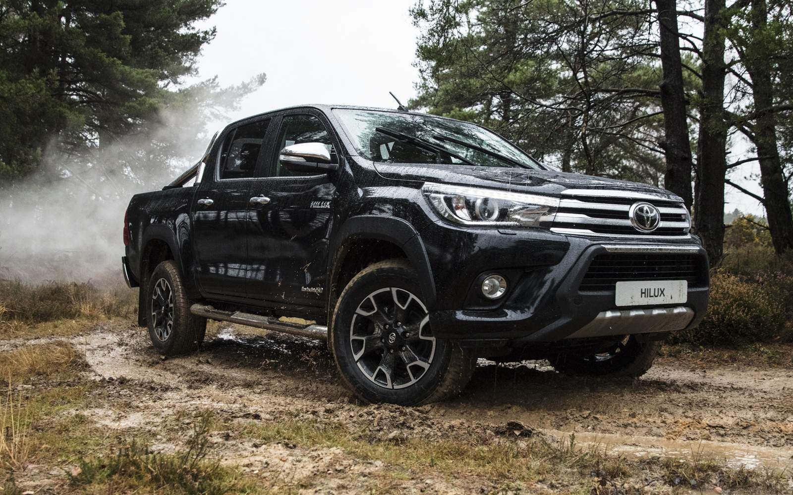

Toyota Hilux
The Toyota Hilux stylized as HiLux and historically as Hi-Lux, is a series of pickup trucks produced and marketed by the Japanese automobile manufacturer Toyota. The
majority of these vehicles are sold as pickup truck or cab chassis variants, although they could be configured
in a variety of body styles.
The pickup truck was sold with the Hilux name in most markets, but in North America, the Hilux name was retired
in 1976 in favor of Truck, Pickup Truck, or Compact Truck. In North America, the popular option package, the SR5
(Sport Runabout 5-Speed), was colloquially used as a model name for the truck, even though the option package
was also used on other Toyota models, like the 1972 to 1979 Corolla.
Engine Displacement cc - 2755
Fuel Type - Diesel
Seating Capacity - 5
Fuel Tank Capacity - 80.0
Body Type - Pickup Truck
TransmissionType - Automatic
